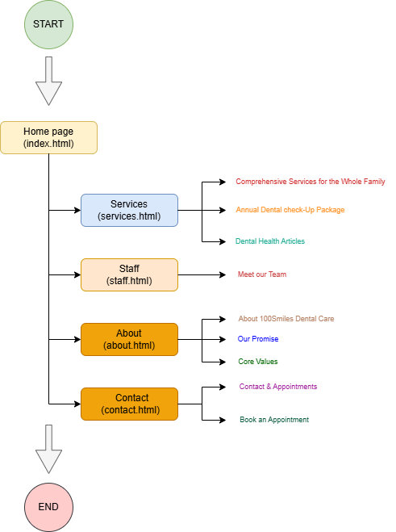

CP1406/CP5638 - Assignment 1 - Project Plan
Name:Deepak Penabadi
Goal
The goal of the 100SMILES Dental Care website is to increase new patient appointments by 25% within six months
by creating a modern, user-friendly online presence for the clinic that improves discoverability and simplifies booking. The website will
communicate the clinic’s decades-long local presence, range of services, and staff credentials so potential patients feel confident booking care.
Success Evaluation
The website’s success will be measured with specific, quantifiable metrics:
- Online appointment conversions: A 25% increase in bookings made via the website or email booking link compared to the baseline monthly average.
- User engagement: Average session duration of at least 2 minutes on service and team pages and a reduced bounce rate for key pages.
- Lead generation: Growth in the number of contact-form submissions and email enquiries (tracked monthly).
- Local visibility: Improved ranking for local searches such as “Razole dentist” or “Razole dental clinic” (target: enter top 5 for key terms).
- Promotional uptake: Redemption of email booking 20% discount for first-time visitors (tracked via promotional code or mention).
Target Audience
The website is primarily for:
- Local families and parents seeking children’s dental care and preventive services (first-visit reassurance, pediatric care).
- Working adults and retirees who need routine check-ups, restorative or cosmetic procedures and value trustworthy, long-term care.
To suit this audience, the site will:
- Use a calm, trust-building light palette (white and soft blue), clear headings and large, legible fonts for older visitors.
- Feature staff photos and friendly bios to build rapport and reduce appointment anxiety.
- Place calls-to-action (Book Appointment, Contact Us) prominently on all pages and ensure mobile-first usability for busy users.
Site Flowchart
The flowchart below shows the page hierarchy and navigation structure for the site.flowchart.png
